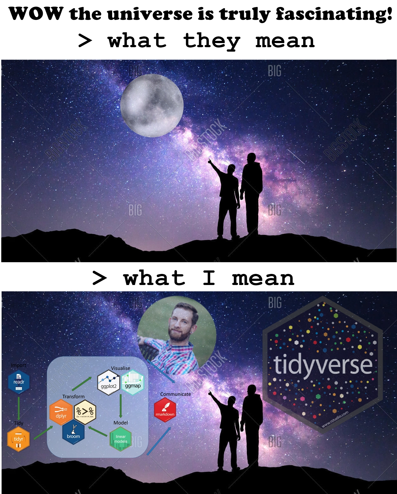
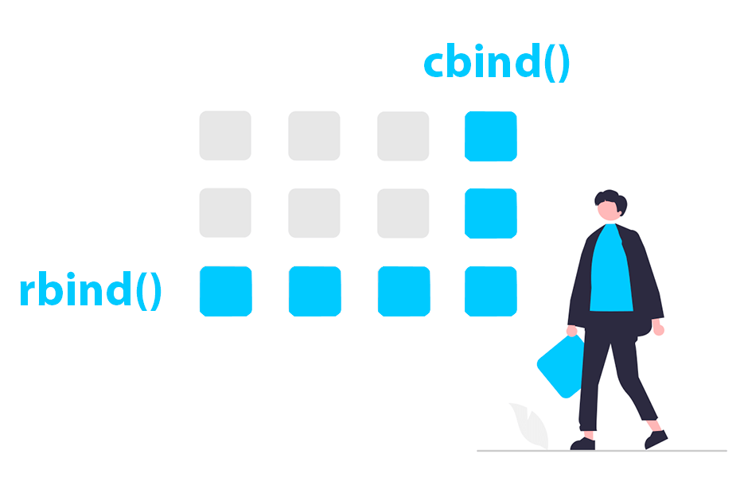
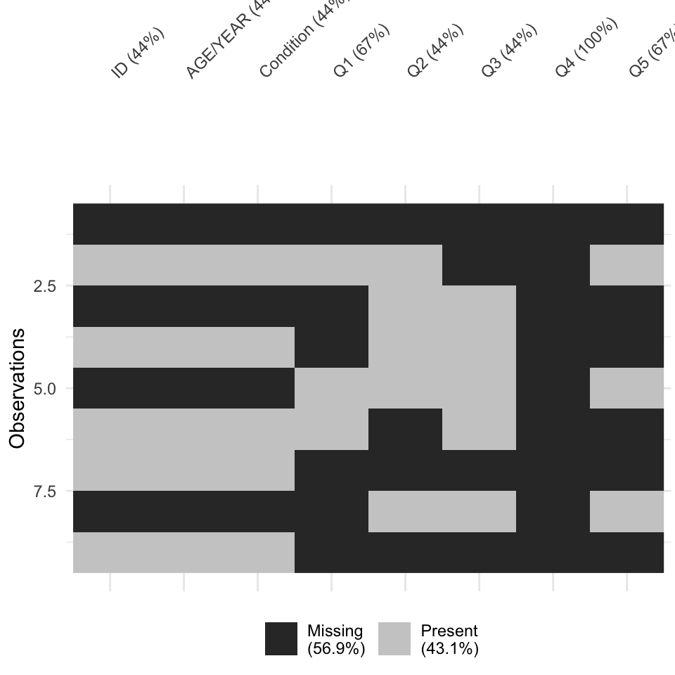

library(tidyverse)
# Construct flawed dataset
# Create flawed dataset with "blank" cells (as "")
flawed_data <- tribble(
~ID, ~`AGE/YEAR`, ~Condition, ~Q1, ~Q2, ~Q3, ~Q4, ~Q5,
"", "", "", "", "", "", "", "",
"P001", "23", "Control", "5", "4", "", "", "3",
"", "", "", "", "5", "3", "", "",
"P002", "1999", "Treatment","", "5", "2", "", "",
"", "", "", "4", "4", "4", "", "4",
"P003", "45", "Control", "5", "", "3", "", "",
"P004", "31", "Treatment","", "", "", "", "",
"", "", "", "", "2", "2", "", "2",
"P005", "30 / 1994", "Control", "", "", "", "", ""
)
# Write to CSV — using na = "" so NAs appear as blanks
write_csv(flawed_data, here("Datasets", "flawed_data.csv"), na = "")PSY6422 - Data Management & Visualisation
Data Wrangling I
Dr Daniel Poole
Attendance Check-In Code
Enter the attendance code for today’s seminar to log your attendance.
You can log your attendance on iSheffield
What Is Data Wrangling?
Data Wrangling is the process of turning raw data into a format we can use for visualisation, analysis, etc.
- Data Wrangling is very important as it allows us to work with data
- These are fundamental data science skills
What is Data Wrangling?

What is Data Wrangling?
The key steps to data wrangling are:
- Import
- Bringing data into our R workspace from .csv, .xlsx etc
- Tidy
- Organising data into a clear, consistent structure
- Transform
- Modifying or summarising data so it is ready for visualisation
Exploring the Tidyverse!
We will be operating under the tidyverse framework in R.
The tidyverse is a set of R packages which streamlines the entire process of data wrangling
Tidyverse Logo
- Helpfully,
tidyverseincludesggplot2which is a fantastic package for data visualisation
Exploring the Tidyverse!
Exploring the Tidyverse!

Importing Data into R
Importing Data into R
In Week 2 you learned how to import data using the data.table package - We are now using ‘tidyverse’ which includes readr
Importing Data into R
Note we are using relative paths within our R project
Importing Data into R
We can make our paths even more reliable by combining readr with here() from the here package
You can use here() to check where R thinks the data is
Inspecting your Dataset
Once you have imported a dataset into R it’s a good idea to take a look at what you are working with.
The initial inspection can help us to:
- spot obvious issues
- confirm the data structure matches our expectations
- understand what variables are included and how they are recorded
Understanding what is there will shape what we need to do when tidying and transforming our data
Inspecting your Dataset
Based on our knowledge of the dataset we will have specific expectations that we will want to confirm. However, some generic things to look for are:
- the data should form a rectangle with rows and columns
- a column should uniquely define the rows (e.g. participant number)
- columns should be analysable
- the information should be explicit
- only one piece of information should be collected per variable
Can you Spot Any Issues?
# A tibble: 6 × 8
ID `AGE/YEAR` Condition Q1 Q2 Q3 Q4 Q5
<chr> <chr> <chr> <chr> <chr> <chr> <chr> <chr>
1 "" "" "" "" "" "" "" ""
2 "P001" "23" "Control" "5" "4" "" "" "3"
3 "" "" "" "" "5" "3" "" ""
4 "P002" "1999" "Treatment" "" "5" "2" "" ""
5 "" "" "" "4" "4" "4" "" "4"
6 "P003" "45" "Control" "5" "" "3" "" "" Inspecting your Dataset
We can also use View() to open it in a spreadsheet-style window.
You may prefer this when you are getting familiar with R
- Note
View()is capitalised — lowercase ‘view()’ won’t work
This works in RStudio
Data Types
Understanding what data type you are working with will help you work effectively with your data set:
- Character: Text data (e.g. names, IDs)
- Double: Numeric data with decimals
- Integer: Whole numbers (often treated as double)
- Logical: TRUE / FALSE values
- Factor: Categorical data with defined levels
- Date: Calendar dates
Spot Anything Wrong?
library(tidyverse)
dir.create("Data", showWarnings = FALSE)
data_type_issues <- tribble(
~ID, ~AGE, ~Condition, ~Timepoint, ~Q1, ~Q2, ~Q3, ~Q4, ~Q5,
"P001", "23", "Control", "T1", "5", "4", "3", "4", "5",
"P002", "30", "Treatment","T1", "4", "4", "4", "3", "N/A",
"P003", "27", "Control", "T2", "3", "4", "3", "4", "3",
"P004", "unknown", "Treatment","T1", "4", "4", "4", "4", "4",
"P005", "25", "Control", "T2", "3", "3", "3", "3", "3"
)
write_csv(data_type_issues, here("Datasets", "data_type_issues.csv"), na = "")#Remember to load tidyverse at the beginning of your code
library(tidyverse)
library(here)
# Read in the data
data_issue <- read_csv("../Datasets/data_type_issues.csv", show_col_types = FALSE)
# use glimpse to inspect the data
glimpse(data_issue)Rows: 5
Columns: 9
$ ID <chr> "P001", "P002", "P003", "P004", "P005"
$ AGE <chr> "23", "30", "27", "unknown", "25"
$ Condition <chr> "Control", "Treatment", "Control", "Treatment", "Control"
$ Timepoint <chr> "T1", "T1", "T2", "T1", "T2"
$ Q1 <dbl> 5, 4, 3, 4, 3
$ Q2 <dbl> 4, 4, 4, 4, 3
$ Q3 <dbl> 3, 4, 3, 4, 3
$ Q4 <dbl> 4, 3, 4, 4, 3
$ Q5 <chr> "5", "N/A", "3", "4", "3"Live Coding
I’m going to do the first steps of loading and taking a first look at a dataset
Break
Tidy
Data Frames
You were introduced to dataframes in week 1
A data frame is the basic way R stores tabular data — like a spreadsheet.
- Rows = observations (e.g. participants, trials)
- Columns = variables (e.g. age, condition, score)
It looks like a table, but behaves like an object R can work with
Data Frames
Tibbles
A tibble is a modern version of a dataframe from the ‘tidyverse’.
- Stores data in the same underlying structure as a data frame
- Never changes variable types (no auto-converting to factors)
- Shows column types (
<chr>,<dbl>, etc.) - Works better with tidyverse (e.g.
ggplot2)
Tibbles
#loads tidyverse
library(tidyverse)
#tidyverse tibble
tb <- tibble(
ID = c("P001", "P002", "P003"),
Age = c(23, 31, 45),
Condition = c("Control", "Treatment", "Control"),
Score = c(88, 92, 79)
)
#prints tibble
print(tb)# A tibble: 3 × 4
ID Age Condition Score
<chr> <dbl> <chr> <dbl>
1 P001 23 Control 88
2 P002 31 Treatment 92
3 P003 45 Control 79Tibbles
You can use the tribble() function to create a tibble row by row
library (tidyverse)
#create a tibble row by row if you want to
tb <- tribble(
~ID, ~Age, ~Condition, ~Score,
"P001", 23, "Control", 88,
"P002", 31, "Treatment", 92,
"P003", 45, "Control", 79
)
#prints tibble
print(tb)# A tibble: 3 × 4
ID Age Condition Score
<chr> <dbl> <chr> <dbl>
1 P001 23 Control 88
2 P002 31 Treatment 92
3 P003 45 Control 79Tibbles
You can convert an existing data frame to a tibble
ID Age Condition Score
1 P001 23 Control 88
2 P002 31 Treatment 92
3 P003 45 Control 79# A tibble: 3 × 4
ID Age Condition Score
<chr> <dbl> <chr> <dbl>
1 P001 23 Control 88
2 P002 31 Treatment 92
3 P003 45 Control 79Tibbles
We subset tibbles exactly the same as dataframes
Joining Dataframes (or Tibbles)

Joining Dataframes (or Tibbles)
It is very common that you will need to combine data frames together
For instance:
- Combining data across participant groups, or time points
- Merging responses with demographic data
- Combining scores from different scales
- Joining open datasets from different repositories
etc etc
Joining Dataframes (or Tibbles)
You can use rbind() to combine two tibbles (or data frames) by stacking rows.
rbind() Errors to Watch For
- Column names must match exactly (e.g. Score ≠ score)
- Column types must also match (e.g. numeric ≠ character)
rbind() Errors to Watch For
# A tibble: 2 × 4
ID Age Condition Score
<chr> <dbl> <chr> <dbl>
1 P001 23 Control 88
2 P002 31 Treatment 92# Second tibble with missing columns
tb2 <- tibble(ID = "P003",Age = 45,Condition = "Control")
# Bind rows (try() is so my slides can compile)
try(rbind(tb, tb2))Error in rbind(deparse.level, ...) :
numbers of columns of arguments do not matchrbind() Errors to Watch For
Joining Columns
You can join columns in a very similar way using cbind() to combine two tibbles (or data frames) by side-by-side
Joining Columns
library(tidyverse)
## Joining Columns
# Demographics
demo <- tibble(ID = c("P001", "P002", "P003"),Age = c(23, 31, 45))
# Questionnaire scores
scores <- tibble(ID = c("P001", "P002", "P003"),Q1 = c(4, 5, 3),Q2 = c(3, 4, 5))
# Combine side-by-side
combined <- cbind(demo, scores)
#cbind doesn't auto print
print(combined) ID Age ID Q1 Q2
1 P001 23 P001 4 3
2 P002 31 P002 5 4
3 P003 45 P003 3 5cbind() Errors to Watch For
You need to be confident that the row order matches between data frames (no missing, reordered, or duplicated IDs)
- R will not warn you if rows are mismatched!
cbind() Errors to Watch For
library(tidyverse)
# Demographics (same as before)
demo <- tibble(ID = c("P001", "P002", "P003"),Age = c(23, 31, 45))
# Scores with different row order!
scores <- tibble(ID = c("P002", "P003", "P001"),Q1 = c(5, 3, 4),Q2 = c(4, 5, 3))
# Combine side-by-side
combined_wrong <- cbind(demo, scores)
print(combined_wrong) ID Age ID Q1 Q2
1 P001 23 P002 5 4
2 P002 31 P003 3 5
3 P003 45 P001 4 3Safer Merging of Columns
Helpfully, tidyverse has a function left_join() which matches rows using a key column, like ID
- This is very useful when we want to join datasets by a variable and not the row order
Safer Merging of Columns
# Load tidyverse
library(tidyverse)
# Demographics
demo <- tibble(ID = c("P001", "P002", "P003"),Age = c(23, 31, 45))
# Scores (different row order!)
scores <- tibble(ID = c("P002", "P003", "P001"),Q1 = c(5, 3, 4),Q2 = c(4, 5, 3))
# Merge safely by ID
joined <- left_join(demo, scores, by = "ID")
print(joined)# A tibble: 3 × 4
ID Age Q1 Q2
<chr> <dbl> <dbl> <dbl>
1 P001 23 4 3
2 P002 31 5 4
3 P003 45 3 5Identifying Duplicates
When tidying data, it’s important to check for duplicate rows or entries.
This helps us to spot issues in data collection, import or merging
We can use duplicated() to identify repeated rows
Identifying Duplicates
library(tidyverse)
# Creates tibble
data_dupes <- tibble( ID = c("P001", "P002", "P001", "P003", "P002"), Age = c(23, 31, 23, 45, 31),Condition = c("Control", "Treatment", "Control", "Control", "Treatment"), Q1 = c(4, 5, 4, 3, 5),Q2 = c(3, 4, 3, 5, 4))
#Identifies duplicates (as a logical vector)
duplicated(data_dupes)[1] FALSE FALSE TRUE FALSE TRUERemoving Duplicates
If you have identified that there are duplicates you may want to remove them
distinct() will leave you with the first occurrence of each row
Missing Data
Missing Data Decorative Image
Missing Data
Missing data is common and can affect your analysis.
It’s important to understand where and why data is missing before deciding what to do.
Missing Data
library(here)
library(tidyverse)
#loads the flawed dataset from earlier
flawed<-read_csv("../Datasets/data_type_issues.csv")
# show dataset
head(flawed)# A tibble: 5 × 9
ID AGE Condition Timepoint Q1 Q2 Q3 Q4 Q5
<chr> <chr> <chr> <chr> <dbl> <dbl> <dbl> <dbl> <chr>
1 P001 23 Control T1 5 4 3 4 5
2 P002 30 Treatment T1 4 4 4 3 N/A
3 P003 27 Control T2 3 4 3 4 3
4 P004 unknown Treatment T1 4 4 4 4 4
5 P005 25 Control T2 3 3 3 3 3 ID AGE Condition Timepoint Q1 Q2 Q3 Q4
0 0 0 0 0 0 0 0
Q5
0 We Can Also Visualise
We Can Also Visualise

Missing Data
What to do with missing data is an important decision.
Missing Data
Some things to think about:
- Patterns: is the data missing at random or is it systematic?
- Listwise deletion: easy can use
drop_na()- But reduces sample size and can introduce bias if missingness is not random
- Imputation: replacing missing values with estimated or plausible values
- But what are plausible values? Can risk distorting dataset
- Documentation: as always
Wide vs Long Data
Tidy principles: Each variable forms a column, and each observation forms a row.
Most data you receive will be in one of two formats:
- Wide Format: Each observational unit (e.g., a participant) is one single row.
- Repeated measurements (e.g., scores over time) are stored across multiple columns.
- This format is often less tidy because variable values (like “Time 1” or “Time 2”) are contained in the column names.
Wide vs Long Data
Tidy principles: Each variable forms a column, and each observation forms a row.
Most data you receive will be in one of two formats:
- Long Format: Each single measurement gets its own row.
- A key variable identifies what was measured (e.g.,
Timepoint) and a value variable contains the results (e.g.,Score). - This is the format required by
ggplot2and mosttidyverseanalysis functions.
- A key variable identifies what was measured (e.g.,
Wide vs Long Data

Wide vs Long Data
Wide Data Example
Imagine a survey with three questions (Q1-Q3) asked at two time points (T1 and T2).
Long Data Example: Keep it Tidy!
Long Format better adheres to Tidy Data principles:
Live Coding
I’m going to apply some of what we’ve learned to a dataset https://insideairbnb.com/get-the-data/
Tidy Principles

Tidy Principles
- Tidy data should have variables in columns, observations in rows and values in cells
- We document (in our code) what we we have done and why
Next week we will be covering transforming - What we do when data isn’t formatted how we expected/wanted
Summary: Data Wrangling I
We have covered the foundations of data wrangling
- Import: bringing data into R workspace and inspecting it
- Tidy: organise data into a clear structure
- combining data
Poole PSY6422